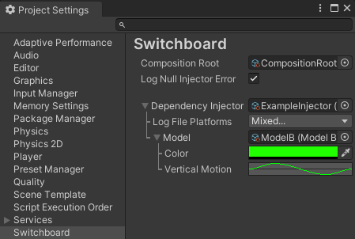

Installation & Basic Setup
Switchboard is available for download through the Unity Asset Store at https://assetstore.unity.com/packages/tools/utilities/switchboard-250879.
- After importing Switchboard, open the Switchboard menu in the Project Settings window. This will automatically create a CompositionRootAsset at Switchboard/Resources/CompositionRoot.asset. This asset is required by Switchboard at run time. The name of the file cannot be changed, but it can be relocated to any Resources directory.
- Assign a DependencyInjector asset to the composition root, or you can disable the "Log Null Injector Error" option to ignore dependency injection. An example DependencyInjector can be found in the Switchboard/Example/Assets/ directory.
- If using dependency injection, ensure that the script execution order of the Destructor component is set to the highest value possible so that the DependencyInjector.Deactivation method occurs after all other MonoBehaviours have been destroyed. You can do this by expanding the Switchboard.DependencyInjection.dll and dragging the Destructor class to the Script Execution Order menu in the Project Settings window.

Example
- Note: Example assets are located in the Switchboard/Example/Assets/ directory.
- Open the SwitchboardExample scene.
- Assign the example DependencyInjector asset to the Dependency Injector field of the CompositionRootAsset, in the Switchboard Project Settings menu.
- Press play.
- See how the color and position of the example object are injected automatically from the model data assigned to the DependencyInjector.
- Change the color and properties of the model assigned to the DependencyInjector.
- See how the color and motion of the example object change in real time.
- Assign the other model asset to the DependencyInjector. If ModelA is assigned, assign ModelB, or vice versa.
- Drag the ExamplePrefab to the scene hierarchy.
- See how the color of the new object matches the color of the assigned model, but the object doesn't move. This is intended to demonstrate a potential issue. The DependencyInjector began updating the original model object when the application started playing. The new model was never made to update in the Activation method. The new model is still injected into objects that request it, and the new color is provided, but the model is not functioning as expected. Be aware of this when creating your own DependencyInjector. You may want to save a private reference to original values assigned to the DependencyInjector when it activates, if the values should not change at run time.
- Stop play.
- Notice that the changes made to the DependencyInjector and model assets while playing are still there. Changes made while play testing are not lost, unlike scene changes.
- With the second model assigned, press play.
- See how the second model creates a totally different behavior in the rendered prefab. You can model the business logic of your application to initialize from the DependencyInjector at the CompositionRoot, while using Unity scenes and components to render the view of the modeled application. Some model logic in scenes may be necessary, depending on the nature of your application. But, in any case, you will have much more control over separating application layers when initializing the app from the CompositionRoot.
- Open the UnityEngine.Application.persistentDataPath directory for your project to view the generated log files.
Create a Custom Dependency Injector
- The ExampleInjector class can be used as a template for creating your own DependencyInjector. Create a new C# script, or copy the ExampleInjector to create a new DependencyInjector class.
- Open the script and ensure the class derives from BasicInjector or DependencyInjector. The BasicInjector class includes built-in log file functionality. Derive directly from the DependencyInjector class if you want to customize your DependencyInjector from scratch, with no pre-existing base class features.
- Add a CreateAssetMenu attribute to the class, similar to the ExampleInjector, so that an instance can be created in the project. If you want the create option to be in the Switchboard section of the Create Menu, use the attribute arguments (menuName = "Switchboard/Your Injector Name Here", order = SwitchboardMenuOrder.Value).
- Override the Activation, Deactivation, and Get methods. If deriving from from BasicInjector, these methods should include a call to the base method. Activation should call base.Activation at the start of the method, but Deactivation and Get should call their base methods at the end. If the Get method of your DependencyInjector derived class does not return an instance of Type T, it should return base.Get.
- The Activation method will run when the application starts playing, before Awake, OnEnable, or Start methods are called on MonoBehaviours. You can instantiate game objects, components, or prefabs, and they will be added to the first scene before MonoBehaviours activate. However, the composition root enables you to use more pure C# classes that are injected out to scenes only if necessary. Objects that instantiate from the composition root may not need to be MonoBehaviours at all if they don't interact directly with scene components.
- The Deactivation method will run when the application is ending, but don't assume it is guaranteed. Deactivation may not run in all cases. If the application closes suddenly, it is possible that this method may not be invoked. However, this method is where everything that was initialized during Activation can also be shut down gracefully when play is stopped in the editor.
- The Get method provides an instance of the requested Type of object, if the DependencyInjector has been activated. This method will not be invoked until Activation has occurred, prior to Deactivation. You can use the typeof(T) operator to compare the request to a certain typeof(IInterface) and return an appropriate object as T.
[CreateAssetMenu(fileName = nameof(ExampleInjector), menuName = "Switchboard/Example Injector", order = SwitchboardMenuOrder.Value)]
public class ExampleInjector : BasicInjector
{
// Add properties.
protected override void Activation()
{
base.Activation();
// Activate your application.
}
protected override void Deactivation()
{
// Deactivate your application.
base.Deactivation();
}
// Provide dependencies via IInjector.Get<T>().
public override T Get<T>()
{
Type type = typeof(T);
if(type == typeof(IService))
return Service as T;
return base.Get<T>();
}
}
Get Dependencies in MonoBehaviours
- Call the InjectorLocator.GetInjector method to get the DependencyInjector as an IInjector.
- If the IInjector instance is not null, use the IInjector.Get method to request dependencies using the generic type argument.
- If a dependency is required for the MonoBehaviour to function properly, attempt to get the dependency in the OnEnable method. If it is unavailable, set enabled = false.
public class ExampleMonoBehaviour : MonoBehaviour
{
private ILogger Logger;
private IService RequiredDependency;
private void OnEnable()
{
IInjector injector = InjectorLocator.GetInjector();
// Get Logger
Logger ??= injector?.Get<ILogger>();
// Get Required Dependency
RequiredDependency ??= injector?.Get<IService>();
if(RequiredDependency == null)
{
enabled = false;
Logger?.LogError("A required dependency was not provided!");
return;
}
}
private void OnDisable()
{
// If you release the reference OnDisable, a new instance can be injected OnEnable.
RequiredDependency = null;
}
private void Start()
{
Logger?.LogInformation("Hello world! I definitely have my required dependencies!");
}
}
TextMeshPro Integration
A TextMeshProExtensions class is included so that you can assign text to TextMesh Pro components with zero GC allocations. The extension methods enable easy assignment of a StringMaker to a TextMesh Pro text component. The methods first check whether the text has actually changed, to avoid re-calculating geometry. Using a StringMaker to assign the text generates zero memory allocations for garbage collection. The script is included with references to TextMesh Pro commented out, so Switchboard does not have an explicit dependency on TextMesh Pro. Uncomment the included script to integrate StringMaker with TextMesh Pro.